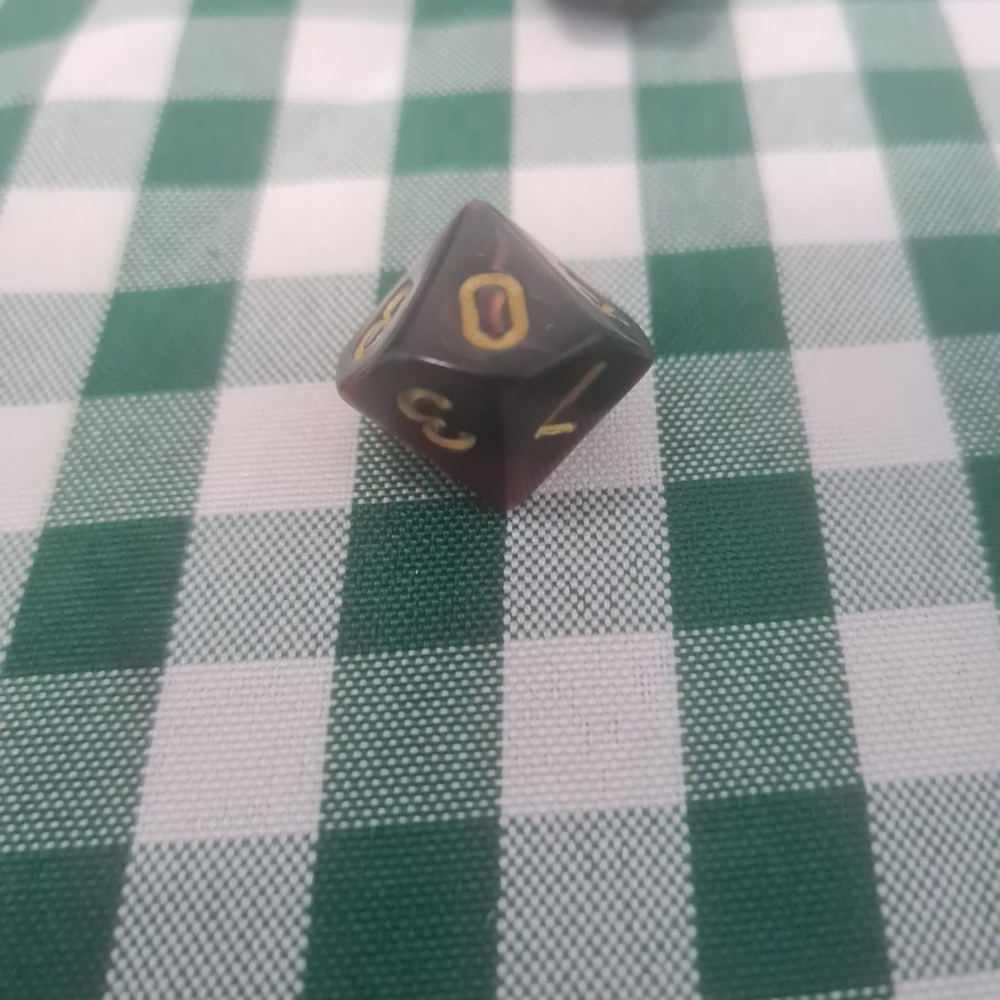
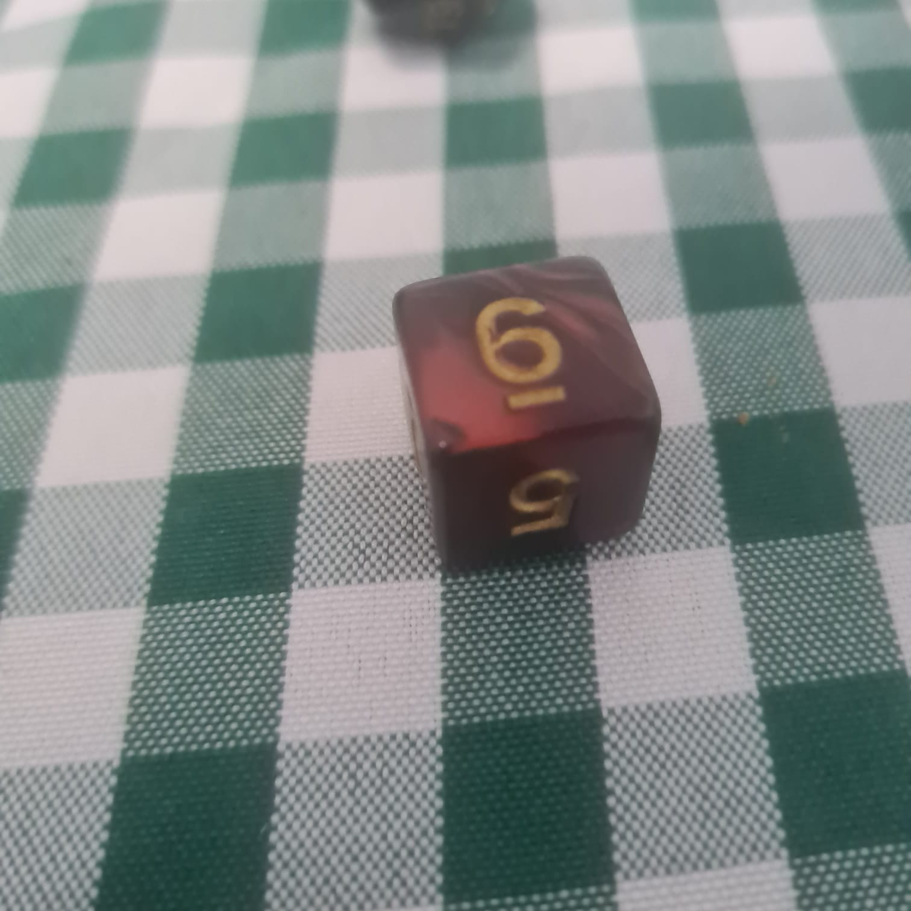

DADOS
╬╬═════════❮◆❯═════════╬╬
Os dados de RPG são os itens mais básicos para se ter uma jogatina. A ação mais básica e
comum no RPG é pegar o dado, fazer uma rolagem e conferir se o resultado foi um sucesso ou
uma falha, mas afinal qual a importância do uso desse objeto? Como e quando usá-los? Tem
diferenças entre os dados ou é tudo igual? Confere aí!
╬╬══════════════════════════❮◆❯═════════════════════════╬╬
Por que os dados são importantes no jogo?
Os dados de RPG são extremamente importantes, afinal, são eles que decidem os efeitos das ações
dos personagens de jogadores e também dos NPCs de forma justa e aleatória.
Toda ação dos personagens pode levar a uma situação onde seja necessária a rolagem de dados para
determinar se ela foi bem sucedida ou não, e aí entra o poder dos dados. É a sua aleatoriedade e
justiça imparcial que dá traz diversão e tensão ao jogo.
Como funcionam os dados de RPG?
Você sabia que a função do dado muda de acordo com cada sistema? Por seguirem regras
específicas, cada sistema dita como aquele dado funciona, mas a principal função é definir o
sucesso ou falha do teste ao ser somado com os modificadores adequados.
╬╬═════════❮◆❯═════════╬╬

Dado D100
Muito usados pelos Narradores em tabelas que geram encontros, itens e situações aleatórias,
também para definir clima e temperatura no momento da narrativa, situações indefinidas. Também
pode incluir o uso para definir porcentagens de avarias em danos massivos a construções,
embarcações, etc.
╬╬═════════❮◆❯═════════╬╬

Dado D20:
Usado como dado-base em jogos do d20 System, onde podemos citar os exemplos de D&D, Tormenta 20
e Pathfinder, os dados de RPG com 20 lados têm um leque de possibilidades, tanto de acerto
quanto de erros e isso gera tensão e clímax a cada jogada devido a grande aleatoriedade
numérica.
╬╬═════════❮◆❯═════════╬╬

Dado D12
Esse dado-figurante entra no d20 System através de lâminas marciais pesadas, armas movidas a
pólvora e truques de magia. Os poderosos ataques das conhecidas Espadas Longas e Machado Gigante
são exemplos clássicos do uso desse dado, o maior dado de dano de armas que existe para esse
sistema.
╬╬═════════❮◆❯═════════╬╬

Dado D10
Usado tanto como dado-base em sistema como Storyteller (do Universo de Vampiro – A Máscara,
Lobisomem – O Apocalipse, dentre outros), onde se rola o d10 para obter um resultado de sucesso.
Mas, ele também pode ser usado como um dado-figurante, que serve para o cálculo de dano de
venenos, magias e armas marciais, como é feito no d20 System.
╬╬═════════❮◆❯═════════╬╬

Dado D8
Normalmente, é um dado-figurante para o dado-base do sistema, ele não faz parte da mecânica dos
testes e sim dos resultados gerados após eles, como cálculo de dano, de espólios encontrados,
etc.
╬╬═════════❮◆❯═════════╬╬

Dado D6
O dado mais comum entre todos por não ser utilizado apenas no RPG, mas dentro desse universo,
ele tem funções distintas em cada sistema.
Alguns sistemas utilizam ele como base, os chamados d6 system (como Mighty Blade, GURPS e
Chamado de Cthullu), e preferem assim por serem mais simples de usar e encontrar, mas outros
como o consagrado D&D o coloca como coadjuvante, sendo usado apenas para cálculos de dano de
acordo com o estilo e tamanho da arma.
╬╬═════════❮◆❯═════════╬╬